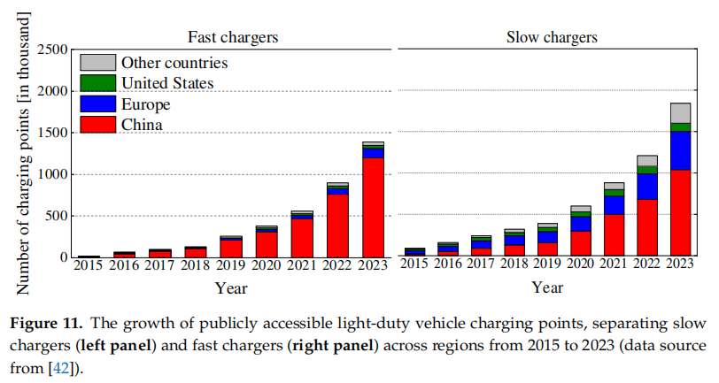

👋 About Me
Hi!👋 My name is Yutong Qian. I am a third-year undergraduate student majoring in Underwater Acoustic Engineering at Jiangsu University of Science and Technology. My research interests include Electric Vehicle Batteries, Eye Tracking, and Sea State Prediction. ‼️ I am actively seeking a Summer 2026 research internship and industry R&D / engineering positions for Fall 2026 or Spring 2027 entry. If you are interested in my research experience, I would be very happy to connect.
🔥 News
- 2023.09: I was admitted to Jiangsu University of Science and Technology.
- 2005.07: I am delighted to announce the birth of my child.
📝 Publications

Understanding the Determinants of Electric Vehicle Range: A Multi-Dimensional Survey
Runze Mao, Weiqian Xu, Yutong Qian, Xiaorong Li, Yuanjiang Li, Guoyuan Li and Houxiang Zhang.
The Application of Eye-Tracking Technology in the Maritime Industry: A Brief Review
Yutong Qian, Runze Mao, Yuanjiang Li, Guoyuan Li, Houxiang Zhang
IEEE 2026A Review of the Application of Eye-Tracking Technology in the Maritime Industry, Yutong Qian, Runze Mao, Guoyuan Li, Senior member, IEEE, and Houxiang Zhang, Senior member, IEEE
🎖 Honors and Awards
- First-class People’s Scholarship
- Second-class People’s Scholarship
- Merit Student (Sanhao Student), University Level
- Merit Student (Sanhao Student), University Level
- 50+ Major Courses graded as “Excellent”
- Probationary Member of the Communist Party of China (Since 2025)
📖 Educations
- 2023.09 - 2027.06 (expected), Undergraduate student at Jiangsu University of Science and Technology, Zhenjiang, Jiangsu.
💻 Internships
- 2025.01 - Present A Review of the Application of Eye-Tracking Technology in the Maritime Industry
- 2025.07 - Present Visual Search Differences Between Experts and Novices: A Hybrid AOI Method
- 2025.01 - 2025.09 The Application of Eye-Tracking Technology in the Maritime Industry: A Brief Review
- 2024.10 - 2025.08 Understanding the Determinants of Electric Vehicle Range: A Multi-Dimensional Survey
- Technical Projects (Independent Research)